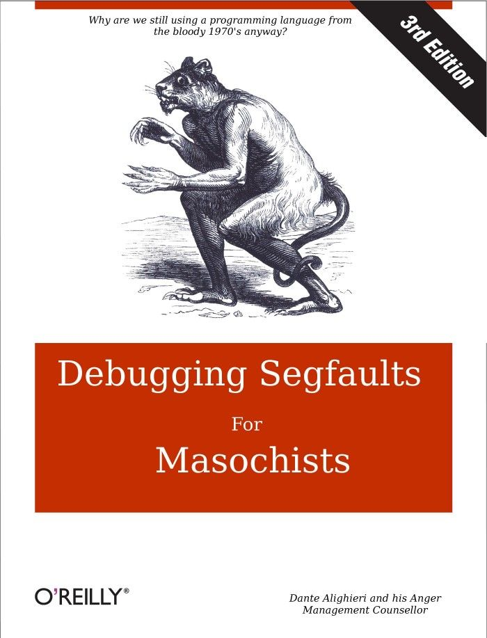

How Thinking in
Python Made Me a Better
Software Engineer
EuroPython 2019
Johnny Dude
Hi, I'm Johnny Dude

|
Software Engineer at TogaNetworks Using Python at work since 2005 I use Python for prototyping Responsible for c++ production code This is my first EuroPython talk |
Outline
- Psychological concepts
- Relation to the development process
- Experiment


Psychological Concepts
Trying not to think about
something, makes thinking
about it more likely
something, makes thinking
about it more likely
The number of objects an
average human can hold in
working memory is 7 ± 2
average human can hold in
working memory is 7 ± 2
Anything that occupies
your working memory reduces
your ability to think
your working memory reduces
your ability to think
Capital of France
Priming is a technique whereby exposure
to one stimulus influences a response
to a subsequent stimulus, without
conscious guidance or intention
You cannot prevent it
Task switching reduces
your productivity time
Fluency is the ability
to do an activity with little, or
no conscious effort
to do an activity with little, or
no conscious effort
Relation to the
Development Process
Immediate Feedback
def get_biggest_files(n, path='.'): lines = system(f'du -a {path}').splitlines() pairs = [line.split('\t') for line in lines] return [name for size, name in nlargest(n, pairs)]
>>> n, path = 2, 'small folder' >>> lines = system(f'du -a {path}').splitlines() >>> lines[:2] ['8\t./darker.css', '32\t./index.html']
>>> n, path = 2, 'small folder' >>> lines = system(f'du -a {path}').splitlines() >>> lines[:2] ['8\t./darker.css', '32\t./index.html'] >>> pairs = [line.split('\t') for line in lines] >>> pairs[:2] [['8', './darker.css'], ['32', './index.html']]
>>> n, path = 2, 'small folder' >>> lines = system(f'du -a {path}').splitlines() >>> lines[:2] ['8\t./darker.css', '32\t./index.html'] >>> pairs = [line.split('\t') for line in lines] >>> pairs[:2] [['8', './darker.css'], ['32', './index.html']] >>> nlargest(n, pairs) [['96', './.git/objects/d1/31af6800b725b05b...'], ['912', './images/repr.jpg'], ['900', './.git/objects/20']]
Learn faster
Catching bugs earlier
reduces task switching
reduces task switching
Confidence that your code works,
without concious effort
without concious effort

Standard Representation
[ { "name": "Tyler Durden", "age": 35, "sibling":[]}, { "name": "Brad Pitt", "age": 56, "sibling":["Doug", "Julie"]}, { "name": "Mia Wallace", "age": 25, "sibling":[]}, { "name": "Uma Thurman", "age": 49, "sibling":[ "Dechen", "Taya", "Ganden", "Mipam"]}, ]
A list of strings, optimized for
filtering items matching a regular expression
filtering items matching a regular expression
"Tyler Durden\nBrad Pitt\nMia Wallace\nUma Thurman\n"
["Tyler Durden", "Brad Pitt", "Mia Wallace", "Uma Thurman"]
A dictionary with keys that
can be searched by regular expression.
can be searched by regular expression.
"Brad Pitt\nMia Wallace\nTyler Durden\nUma Thurman\n" { 22: "Dead", 35: "Alive", 0: "Alive", 10: "Alive" }
{ "Tyler Durden": "Dead", "Uma Thurman": "Alive", "Brad Pitt": "Alive", "Mia Wallace": "Alive" }
(gdb) p my_dict
$1 = {
keys = "Brad Pitt\nMia Wallace\nTyler Durden\nUma T
hurman\n",
hash_table = std::unordered_map with 4 elements = {
[10] = PersonState::alive,
[0] = PersonState::alive,
[35] = PersonState::alive,
[22] = PersonState::dead}}
{ "Tyler Durden": <PersonState object at 0x7fd2622fbd60>, "Uma Thurman": <PersonState object at 0x7fd2622fbc40>, "Brad Pitt": <PersonState object at 0x7fd26231a160>, "Mia Wallace": <PersonState object at 0x7fd26231a100> }
{ "Tyler Durden": PersonState(0), "Uma Thurman": PersonState(1), "Brad Pitt": PersonState(1), "Mia Wallace": PersonState(1) }
If you can read it
then you can visualize it, think about it,
and discuss it with other developers
then you can visualize it, think about it,
and discuss it with other developers
Standard API
Counter({ "Walking Dead": 19, "Alive": 7, "Dead": 2, "Not Born": 1, })
{ }
I want to store something in a dictionary...
I want to store something in a std::map...
Composability
def f(nums): return [str(n) for n in sorted(nums) if valid(n)]
def f(nums): xs = list(nums) sort(xs) ys = filter(valid, xs) zs = map(str, ys) return zs
Mix the ingredients in a bowl. Pour the bowl’s contents into a mould. Bake the mould along with its content.
Bake the mixed ingredients.
def f(nums): return [str(n) for n in sorted(nums) if valid(n)]
def f(nums): xs = list(nums) sort(xs) ys = filter(valid, xs) zs = map(str, ys) return zs
vector<string> f(const vector<int>& nums) { vector<int> xs = nums; sort(xs.begin(), xs.end()); vector<int> ys; copy_if( xs.begin(), xs.end(), back_inserter(ys), valid ); vector<string> zs; transform( ys.begin(), ys.end(), back_inserter(zs), [](int n){ return to_string(n); } ); return zs; }
It is easy to think
with composable tools
with composable tools
Simple is better than Complicated
void f(Object obj) // pass by value void f(Object& obj) // pass by reference void f(Object* obj) // pass by raw pointer void f(Object&& obj) // pass by rvalue void f(shared_ptr<Object> obj) // pass by shared pointer void f(unique_ptr<Object> obj) // pass by unique pointer
Simple is better than complex
void f(Object obj) // pass by value void f(Object& obj) // pass by reference void f(Object* obj) // pass by raw pointer void f(Object&& obj) // pass by rvalue void f(shared_ptr<Object> obj) // pass by shared pointer void f(unique_ptr<Object> obj) // pass by unique pointer
void f(shared_ptr<Object> or unique_ptr<Object> obj) // ??
void f(const Object* obj) // object is immutable void f(Object* const obj) // pointer is immutable void f(const Object* const obj) // both are immutable
void f(Object const* obj) // what is immutable?
Complex is better than complicated
void f(shared_ptr<Object>& obj) // pass shared pointer // by reference
void f(Object obj) // pass by value void f(Object& obj) // pass by reference void f(Object* obj) // pass by raw pointer void f(Object&& obj) // pass by rvalue void f(shared_ptr<Object> obj) // pass by shared pointer void f(unique_ptr<Object> obj) // pass by unique pointer
void f(shared_ptr<Object> or unique_ptr<Object> obj) // ??
void f(const Object* obj) // object is immutable void f(Object* const obj) // pointer is immutable void f(const Object* const obj) // both are immutable
void f(Object const* obj) // what is immutable?
We can use shared pointers everywhere
But, we cannot stop thinking about...
But, we cannot stop thinking about...
Type Hints

|
Do we realy want to
define types and structures before
understanding the problem
and the solution?
Constantly task switching between:
Coding and Type-defining
Coding and Type-defining
How many bits would
I like this integer to have?
I like this integer to have?
What happens when you are wrong?
Lets just use int,
and deal with it later.
and deal with it later.
Prototyping
Prototype is a model
built to test a concept,
and to be learned from
built to test a concept,
and to be learned from
You write it once,
gaining experience in both
understanding the problem, and
understanding a solution
gaining experience in both
understanding the problem, and
understanding a solution
You write it again,
with less things to worry about
and attention to finer details
with less things to worry about
and attention to finer details
Improved Readability
Improved Maintainability
Fewer Bugs
Some things you can do
only in Python
only in Python
Use a dictionary
Define a function
Define a function
Think in the language you write
Handle type checking, seperately
Along with many other reasons.
How much of the speedup do we get
from thinking faster?
from thinking faster?
My Experiment
+--+--+--+--+--+--+--+--+--+ +--+--+--+--+--+--+--+--+--+ |S | |Sooooooooooooooooooo | + +--+--+--+--+ + +--+ + + +--+--+--+--+ + o+--+ + | | | | | | | | | | ooo | | +--+ + + + +--+--+ + + +--+ + + + +--+--+o + + | | | | | | | | | | oooooo | | + +--+ +--+--+ +--+--+ + + +--+ +--+--+ o+--+--+ + | | | | | | | | | oooo| | +--+ +--+--+ +--+ + +--+ +--+ +--+--+ o+--+ +--+--+ | | | | | | ooo | | + +--+ +--+--+ +--+--+ + + +--+ +--+--+o +--+--+ + | |E | | |E | +--+--+--+--+--+--+--+--+--+ +--+--+--+--+--+--+--+--+--+
set<Point> calc_path(map<Point, Point> prevs, Point point) { set<Point> results; point = prevs[point]; while (prevs.find(point) != prevs.end()) { results.insert(point); point = prevs[point]; } return results; } auto points = calc_path(prevs, end_point);
def calc_path(prevs, point): point = prevs[point] while point in prevs: yield point point = prevs[point] points = set(calc_path(prevs, end_point))
Why?
What was I Thinking About?
Experiment,
it's fun
Summary


Immediate Feedback
Standard Representation & API
Composability
Prototype in Python
Think about the way you think
Think in Python
Experiment, it's fun!
Thank You
Twitter: @DudeJohnny1219
email: johnny.dude@gmail.com